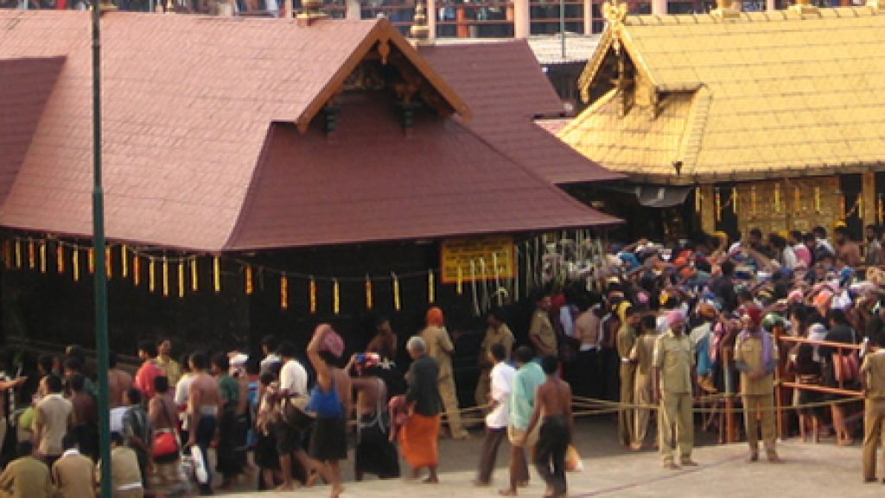
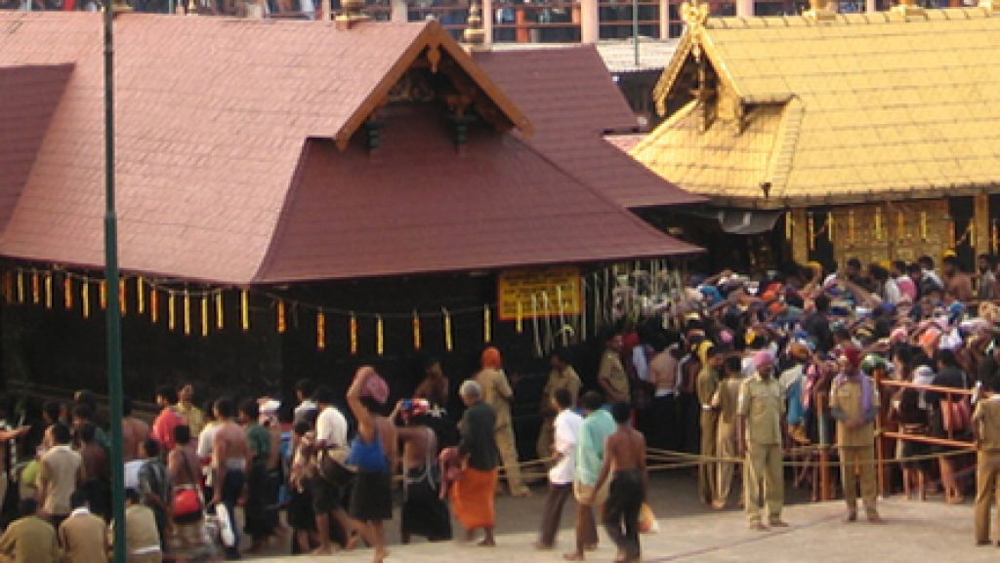

Gavi Gavi |
 Konni and Adovi Konni and Adovi |
Sabarimala |
 Thriveni Sangamam Thriveni Sangamam |
 Kaviyoor Mahadeva Temple Kaviyoor Mahadeva Temple |
 Konni Forest Research Konni Forest Research |
| Gavi |
Konni and Adovi |
Sabarimala |
| Thriveni Sangamam |
Kaviyoor Mahadeva Temple |
Konni Forest Research |